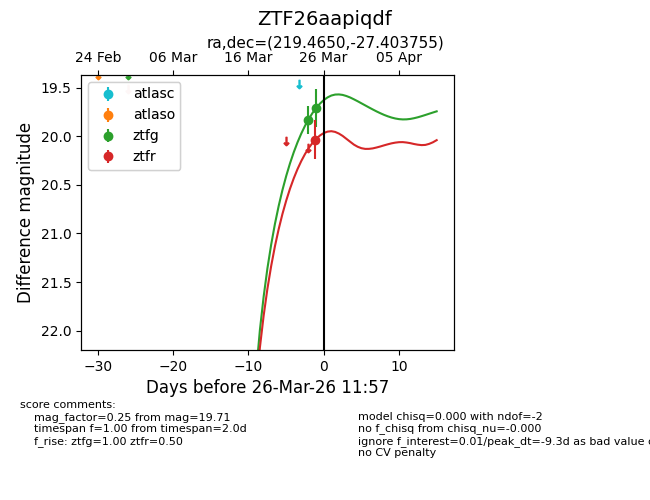
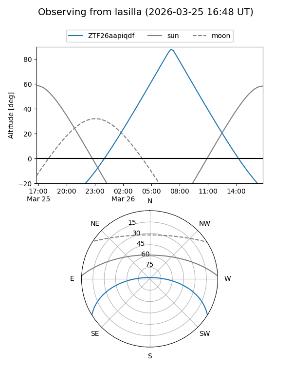
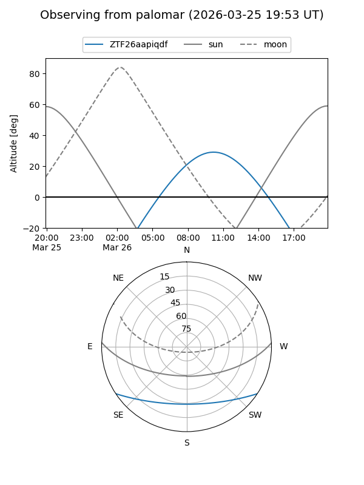
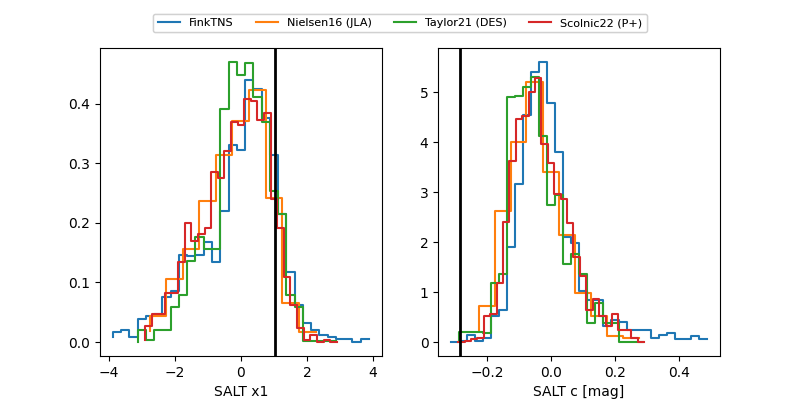

ZTF26aapiqdf
Target ZTF26aapiqdf at 2026-03-26 12:00
Aliases and brokers:
FINK: link
Lasair: link
ALeRCE: link
alt names
ZTF26aapiqdf (ztf,fink_ztf)
Coordinates:
equatorial (ra, dec) = 219.4650,-27.40376
equatorial (HMS+DMS) = 14:37:51.60,-27:24:13.52
galactic (l, b) = (330.1939,+29.77422)
Flags:
Photometry:
last ztfg=19.71, ztfr=20.03
2 ztfg, 1 ztfr detections
Lightcurve

Visibility


Additional plots
